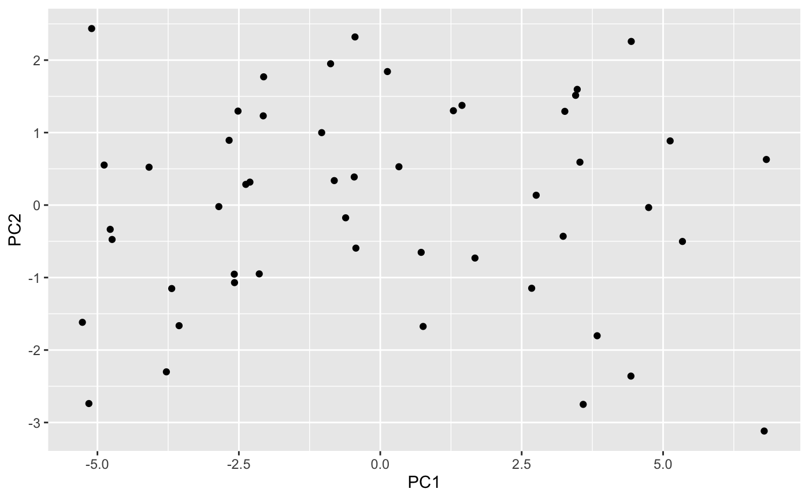
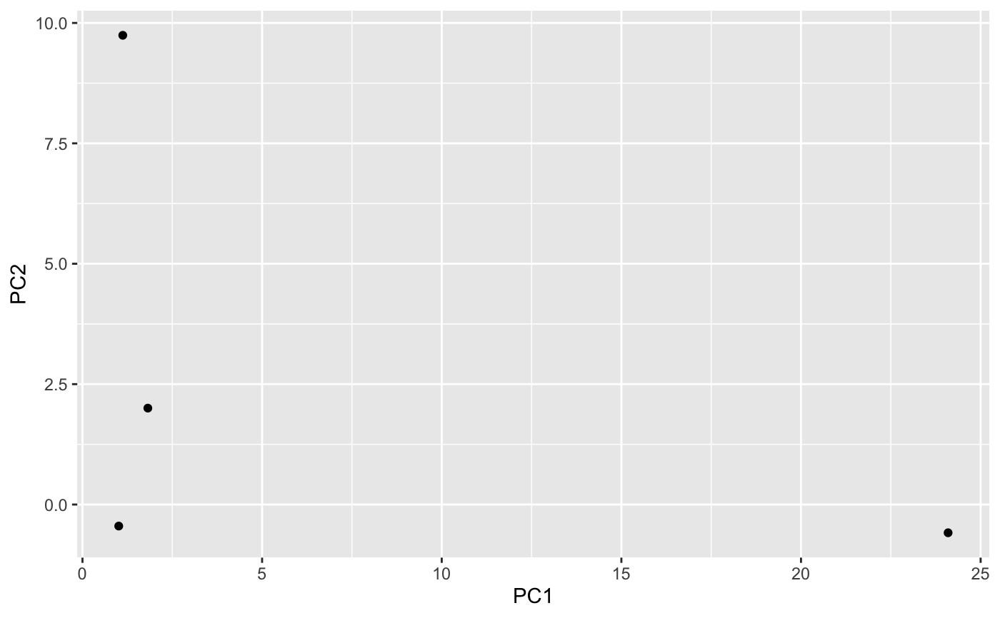
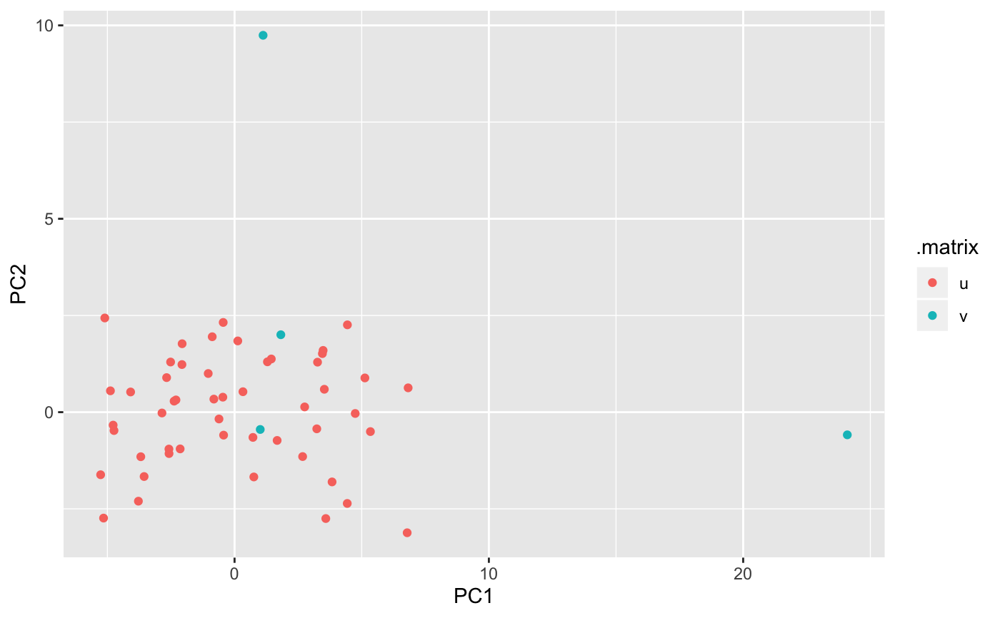
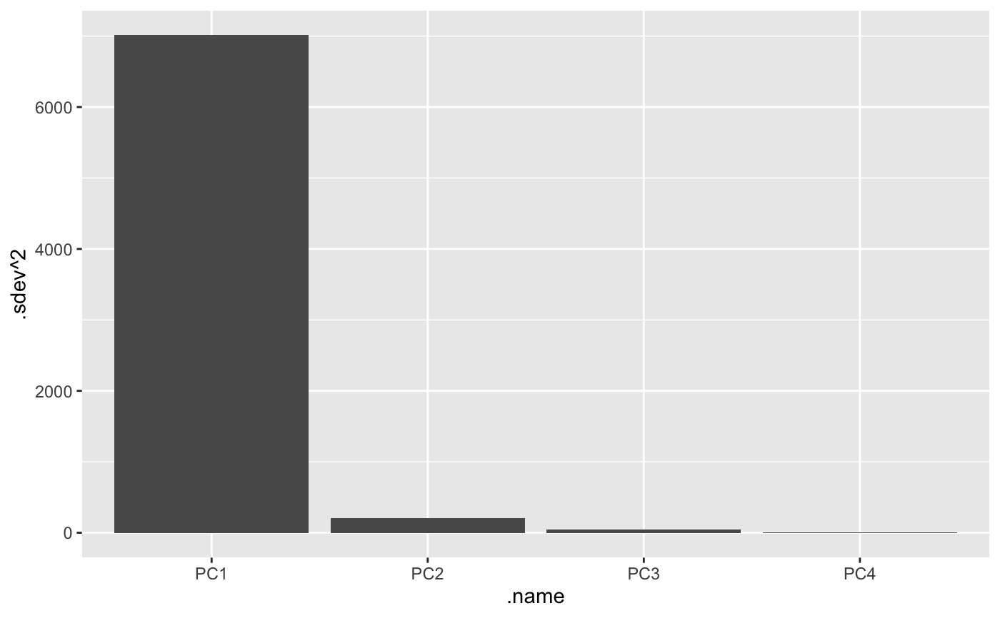
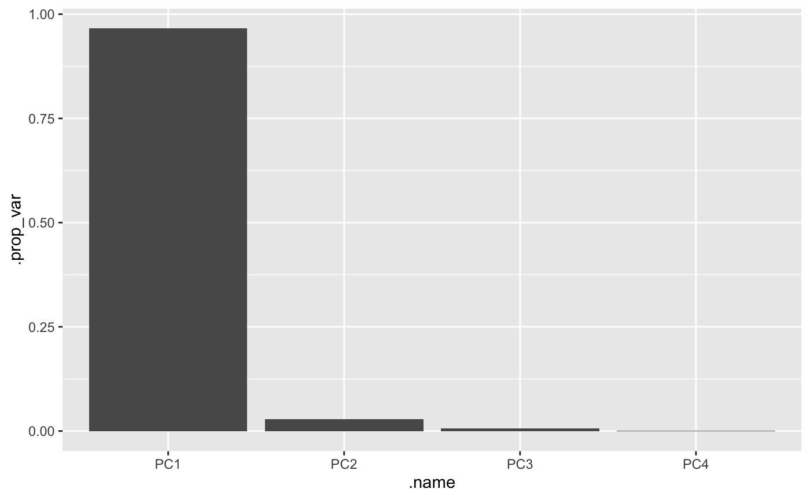
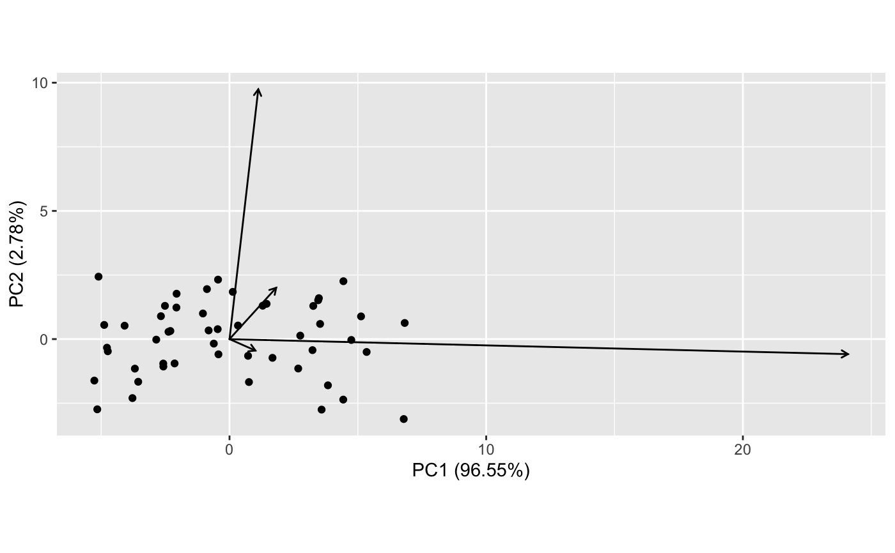

tbl_ord for plottingfortify.RdThese methods of ggplot2::fortify() and generics::tidy()
convert a [tbl_ord] object to a tbl_df object.
# S3 method for tbl_ord fortify(model, data, ..., .matrix = "uv", include = "all") fortify_coord(model) fortify_u(model, include = "all") fortify_v(model, include = "all") # S3 method for tbl_ord tidy(x, ..., .matrix = "uv", include = "all")
| model, x | A |
|---|---|
| data | Ignored. |
| ... | Additional arguments received from |
| .matrix | A character string matching one of several indicators for one
or both matrices in a matrix decomposition used for ordination. The
standard values are |
| include | Character matched to |
The fortify() and tidy() methods for tbl_ord objects produce the same
output, a tibble obtained by binding columns obtained via
get_*(), annotation_*(), and
augmentation_*, respectively.
If any augmented variables are included
(i.e. unless include = "coordinates"),
then the tibble is assigned a "coordinates" attribute
whose value is obtained via get_coord().
(Note that this attribute will not be printed with the tibble.)
# a 'tbl_ord' object pca <- as_tbl_ord(prcomp(USArrests)) pca <- confer_inertia(pca, "symmetric") # fortify/tidy a 'tbl_ord' object fortify(pca)#> # A tibble: 54 x 7 #> PC1 PC2 PC3 PC4 .name .matrix .center #> <dbl> <dbl> <dbl> <dbl> <chr> <chr> <dbl> #> 1 2.68 -1.15 -0.370 -0.578 Alabama u NA #> 2 3.83 -1.80 2.99 0.982 Alaska u NA #> 3 5.12 0.885 -0.250 1.04 Arizona u NA #> 4 0.758 -1.67 0.0312 0.125 Arkansas u NA #> 5 4.44 2.26 1.00 0.674 California u NA #> 6 1.44 1.38 1.82 0.413 Colorado u NA #> 7 -2.51 1.30 -1.25 0.168 Connecticut u NA #> 8 2.76 0.136 -1.67 0.894 Delaware u NA #> 9 6.83 0.629 -0.445 -0.299 Florida u NA #> 10 1.67 -0.731 0.536 -1.76 Georgia u NA #> # … with 44 more rowstidy(pca)#> # A tibble: 54 x 7 #> PC1 PC2 PC3 PC4 .name .matrix .center #> <dbl> <dbl> <dbl> <dbl> <chr> <chr> <dbl> #> 1 2.68 -1.15 -0.370 -0.578 Alabama u NA #> 2 3.83 -1.80 2.99 0.982 Alaska u NA #> 3 5.12 0.885 -0.250 1.04 Arizona u NA #> 4 0.758 -1.67 0.0312 0.125 Arkansas u NA #> 5 4.44 2.26 1.00 0.674 California u NA #> 6 1.44 1.38 1.82 0.413 Colorado u NA #> 7 -2.51 1.30 -1.25 0.168 Connecticut u NA #> 8 2.76 0.136 -1.67 0.894 Delaware u NA #> 9 6.83 0.629 -0.445 -0.299 Florida u NA #> 10 1.67 -0.731 0.536 -1.76 Georgia u NA #> # … with 44 more rows# scores or loadings plots using `ggplot()` ggplot(pca, aes(x = PC1, y = PC2), .matrix = "u") + geom_point()ggplot(pca, aes(x = PC1, y = PC2), .matrix = "v") + geom_point()# biplot using `ggplot()` ggplot(pca, aes(x = PC1, y = PC2)) + geom_point(aes(color = .matrix))# fortify to coordinates & scree plot using `ggplot()` fortify(pca, .matrix = "coord")#> # A tibble: 4 x 4 #> .name .sdev .inertia .prop_var #> <chr> <dbl> <dbl> <dbl> #> 1 PC1 83.7 343545. 0.966 #> 2 PC2 14.2 9898. 0.0278 #> 3 PC3 6.49 2064. 0.00580 #> 4 PC4 2.48 302. 0.000849ggplot(pca, .matrix = "coord", aes(x = .name, y = .sdev^2)) + geom_bar(stat = "identity")ggplot(pca, .matrix = "coord", aes(x = .name, y = .prop_var)) + geom_bar(stat = "identity")# `fortify()` being called internally by `ggbiplot()` ggbiplot(pca) + geom_v_vector() + geom_u_point()